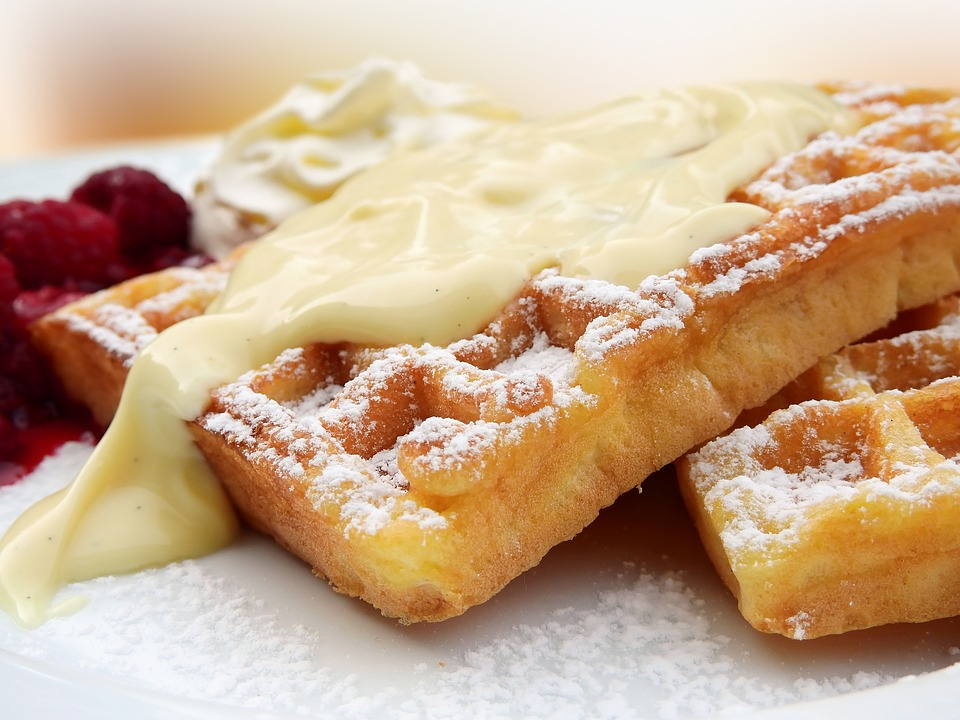

How To Make Creme Anglaise!
Welcome To my Page! This how to site will help you make Creme Anglaise!
Cheesecakes are so fun to bake. I am so happy to show you the way to make Creme Anglaise.The experience of baking has been life changing for me. I hope you enjoy!
